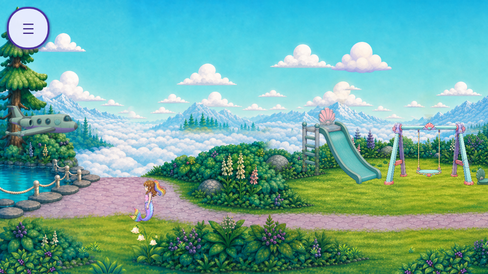
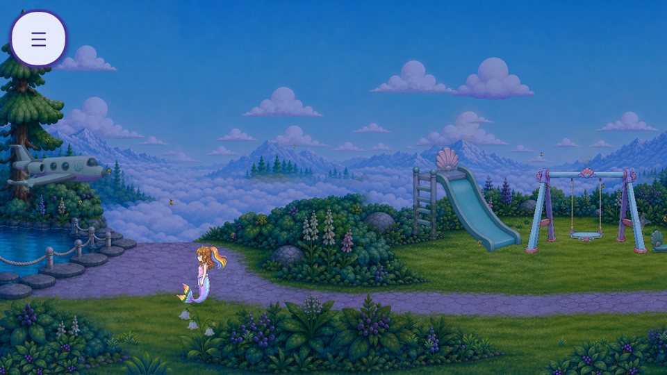
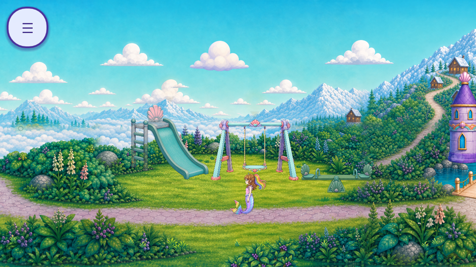
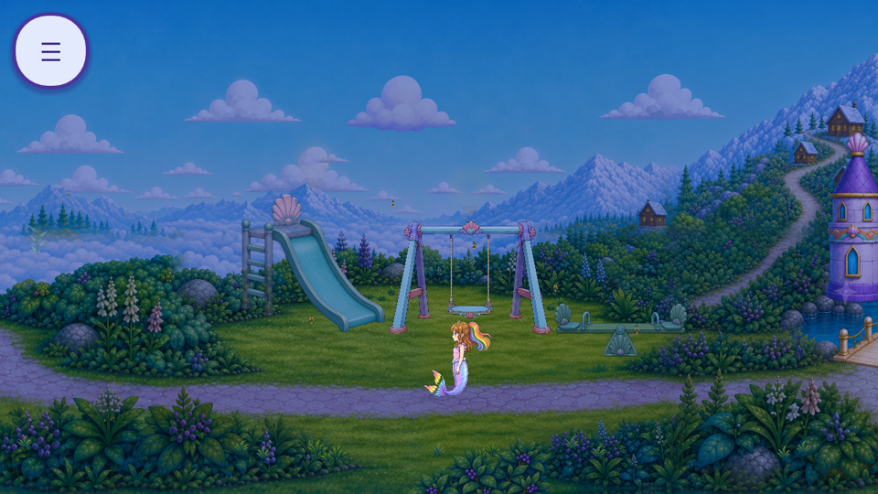
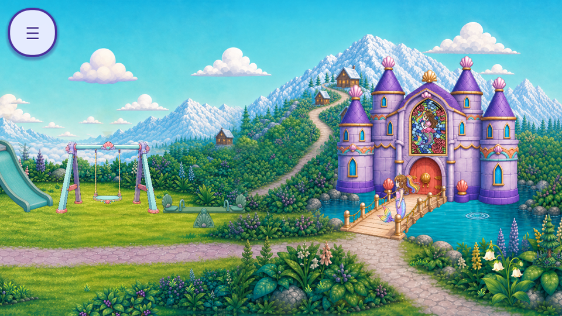
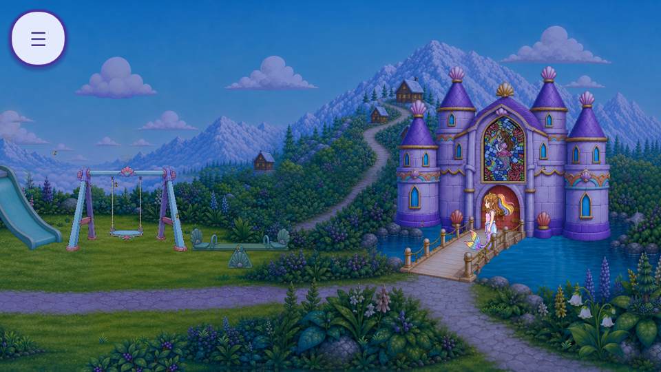
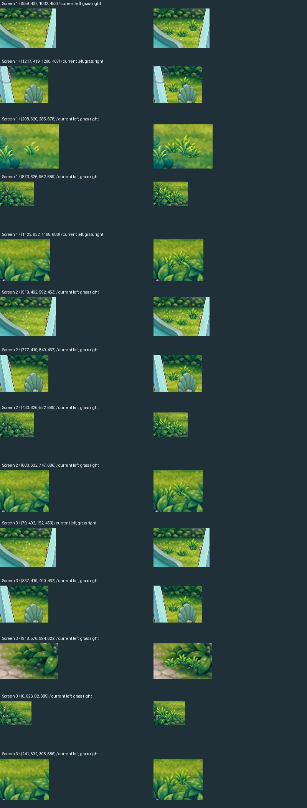

18 rooted tufts in six planting groups. Four timeline positions over 1.4 seconds; three shared atlases. Only grass is advancing in these captures so its motion is inspectable. Other scene motion is frozen by the capture fixture, not removed from the game.
Original/default stage remains available. Focused checks pass; full regression, target-device and owner acceptance remain open. This does not complete broad lawn or cloud-sea animation.







Capture evidence · Native Aseprite timeline · Editable ORA pose layers